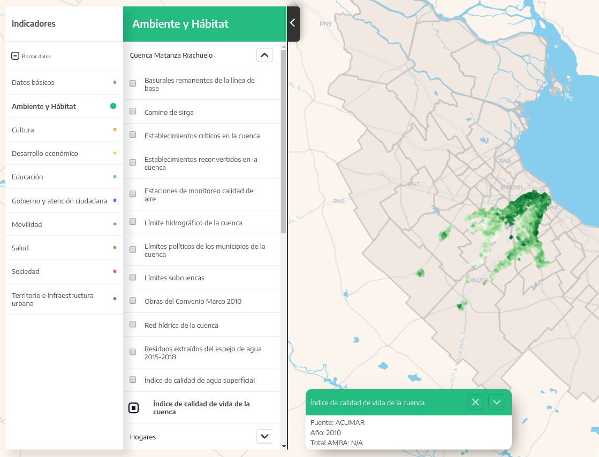
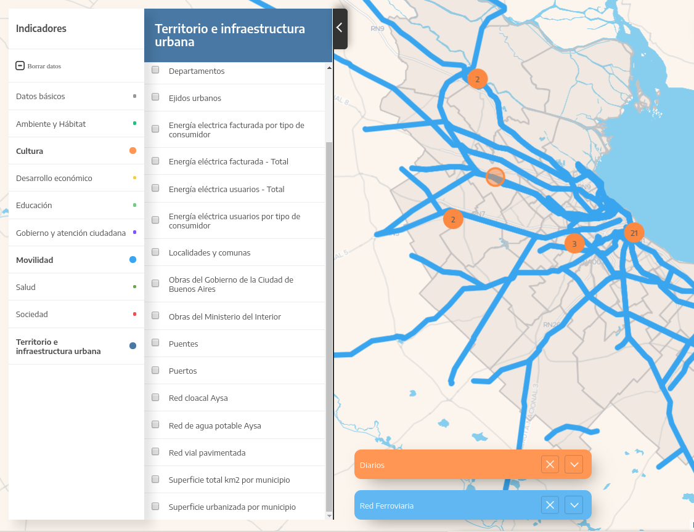
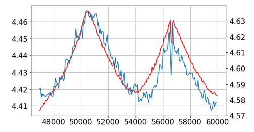

Pewen
Matemática & TIC
Presentación
Curriculum
Sólida formación en Física y Matemática
Análisis de grandes cantidades de datos
Programación científica
Ciencia de Datos y Machine Learning
Visualización de datos
Áreas de trabajo
Modelado matemáticos, análisis de datos
Generar el modelo matemático desde cero
Implementación computacional
Optimización computacional
Implementación y análisis de machine learning
Automatización de procesos repetitivos
Visualización
Procesamiento de imágenes satelitáles
GUI HTML5
Tecnologías
Python, Lua, Fortran
D3 - JavaScript
Docker
GNU/Linux
Machine learning
NoSQL database
GIS
Algunos proyectos
Unsteady Vortex Lattice Method
UVLM es un código desarrollado en Fortran para hacer simulaciones de perfiles alares. El problema principal era el tiempo de la simulación.
Originalmente tardaba 1 semana. Luego de optimizaciones matemáticas y numéricas tarda 3 horas. Corre en 80 cores.
TEN - Simulaciones cuánticas
Software para análisis cuánticos químicos. Desarrollo del modelo matemático y la implementación numérica para correr en cluster.
https://github.com/pewen/ten
XVII Giambiagi Winter School. Light and light-based technologies, dpto de Física, UBA

Mapeo interactivo y análisis de Cortaderos de Ladrillos
Desarrollo de una aplicación web para mapeo colectivo. Además se cruzaron datos con los del censo nacional para crear gráficos de las distribuciones de acceso a diferentes servicios básicos desde los cortaderos.
Muertes infantiles y marginalidad detrás de los ladrillos cordobeses

Observatorio de corrupción
Mostrar datos públicos del Estado. Diariamente se scrapea el Centro de Información Judicial para analizarlo y generar una interfaz gráfica.
+5000 PDFs para extraer información
Scraping diario de +500 causas
Visualizaciones automáticas con nuevos datos
Observatorio de Causas de Corrupción
Socios.red
Visualización de las relaciones del poder económico de Argentina 1 millón de empresas
2 millones de personas
Funcionarios públicos
60 mil aportes a campañas políticas
Compras del Estado
socios.red
AMBA en datos
+400 bases de datos
distintos tipos de datos georeferenciados: puntos, líneas, polígonos, municipios
plots multi capa sobre el mapa y gráficos adicionales como treemap y bar plots
interfaz web mobile responsible


Taller de Matemática Industrial
A partir de los datos que releva Aluar en las cubas de producción de aluminio generamos un modelo matemático y numérico para simular el consumo de alumita.
Taller de Matemática Industrial 2018, Exactas, UBA

Simulación de consumo de alumita en cuba de producción azul: curva real
roja: curva simulada
Workshops
Tercer Escuela Argentina de GPGPU Computing para Aplicaciones Científicas, Instituto Balseiro Advanced Techniques for Scientific Programming, Brazil
Astro Hack Week 2016, Berkeley, CA
Curso dictado
Programación Científica en Python, Departamento de Ciencias de la Atmósfera y los Océanos, Exáctas, UBA
Premios y reconocimientos
NASA Space Apps Challenge: Best Mission Concept, “Piratas de Cascotes”, Bs As
NASA Space Apps Challenge: Pollen Alert - Global Winner
“Predicción de Clicks”, 1er puesto. Jampp y Programa de Ciencia de Datos de Fundación Sadosky
Hackaton Agro Datos, 3er puesto, “Germineitor”, FaMAF, Córdoba